Starting assumption
The platform was meant to let CRM and commercial teams register campaigns autonomously, without CRM intervention. That assumption defined the original scope and was the first thing I set out to pressure-test.
A CRM platform that let Dotz's commercial consultants build and sell campaigns faster, built after discovering the product had been designed for the wrong user.
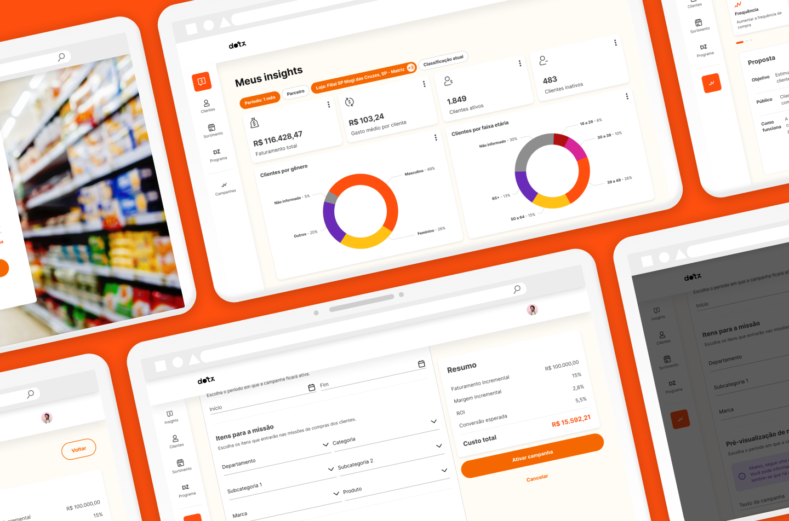
Dotz is one of Brazil's largest loyalty networks, operating a B2B2C model that connects millions of consumers with hundreds of retail partners through points-based incentive programs.
I led the design of a CRM campaign management platform built to let commercial executives sell and configure marketing actions for retail partners, and give those partners visibility into campaign performance and business health.
The flagship initiative was the Buying Mission campaign: a high-frequency CRM mechanic that drives consumer foot traffic and purchase frequency at Dotz's retail locations.
Impact
Involved teams
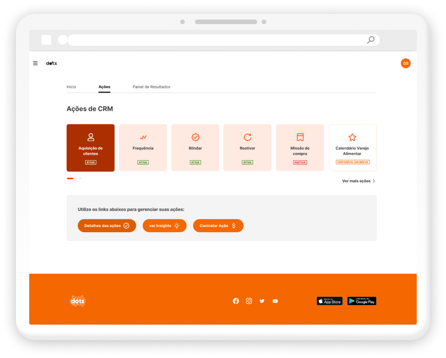
The platform already existed, built entirely from the development squad's assumptions, with no discovery process behind it. Before any design work could happen, I had to establish a shared understanding of what the product actually needed to be, and for whom.
For three months, the team had no Product Owner or Product Manager. I absorbed that gap running discovery, prioritization decisions, and aligning with stakeholders while continuing to lead design. When the commercial team and board drove scope, I created a lightweight process that could absorb those pressures without abandoning product integrity.
The commercial department blocked all direct contact with retail partners, citing past friction with external consultants. I worked within that constraint redirecting research toward internal commercial consultants, who turned out to be the actual daily users of the platform (a finding that reoriented the entire product direction.)
The platform needed to increase contract volume with retail partners, accelerate cross-selling of CRM actions, and eliminate the manual overhead dragging down campaign execution.
Every design decision was evaluated against those commercial outcomes, not just usability or process improvement.
With no PM in place, I structured and ran the discovery myself, owning the research direction, task prioritization and stakeholder alignment.
The platform was meant to let CRM and commercial teams register campaigns autonomously, without CRM intervention. That assumption defined the original scope and was the first thing I set out to pressure-test.
I mapped how retail and CRM actions actually worked end to end, then traced which teams touched each step. Two questions surfaced immediately and reframed the project: were we building in the right direction, and was the real user internal or external?
I ran in-depth interviews across Dotz's commercial, CRM, Analytics, and Data Engineering teams.
They didn't just validate the original problem: exposed a flawed assumption at the core of the product.
The platform had been conceived as self-service for retail partners. Interviews showed partners would rarely touch it. Dotz's own commercial consultants were assisting them at every step, and would be the real daily users. The product had been designed for the wrong person.
Closing a single campaign required multiple departments, and critical partner information was lost between them. The commercial team needed it centralized in one place, not spread across handoffs.
Consultants wanted partners to eventually self-serve, but that wasn't realistic early on: partner organizations had no CRM or insights team to operate it. Autonomy was a later-stage goal, not a launch requirement.
I mapped what we knew, what we assumed, and what we still had to prove across both campaign creation and the retail segment as a whole.
This separated validated fact from inherited assumption, and set the priorities for the definition phase.
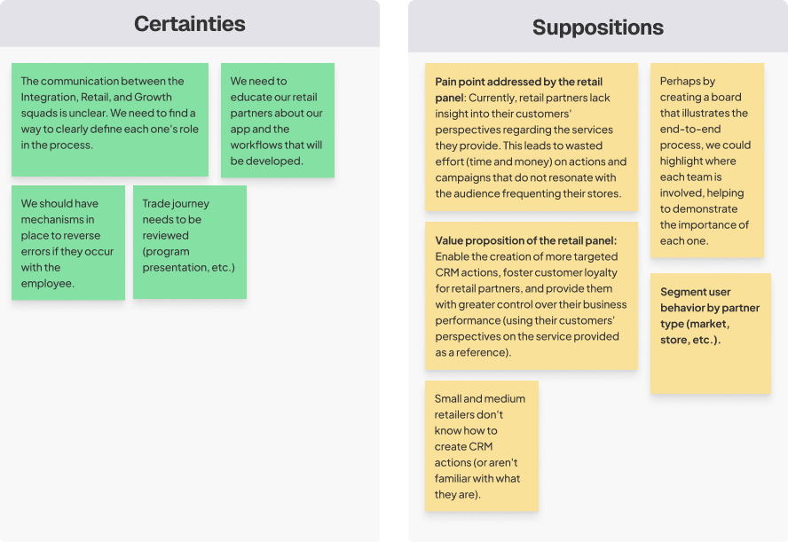
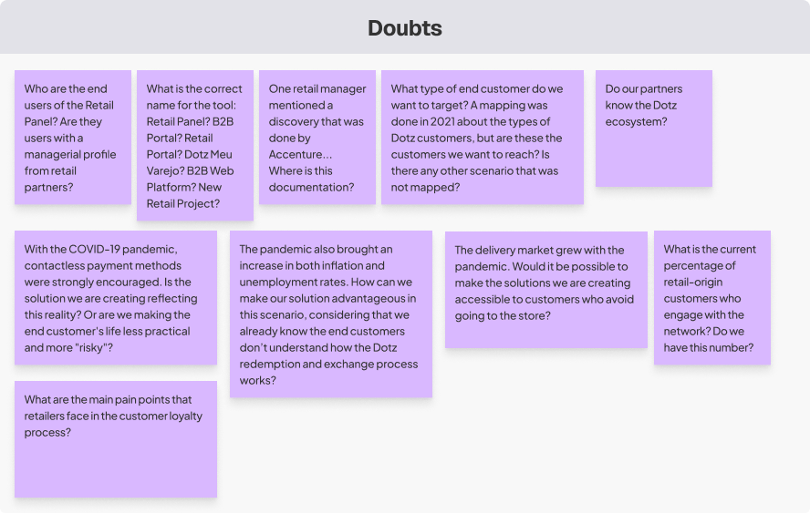
We were three months into building for
the wrong user.
Reframing the primary user around Dotz's commercial consultants redirected the roadmap before we shipped the wrong product and shaped every decision that followed.
Discovery pointed to one primary user the original product had ignored: Dotz's commercial consultant , who would operate the platform daily.
I built the primary persona around him: the person every downstream design decision had to serve.
Dotz Consultant / Account Executive
Afonso, account executive at Dotz for over a year, supports the Savegnago supermarket in São Paulo's interior. Part of a small but efficient team, he manages CRM campaigns for regional retail partners.
His demanding role involves presenting results to top management and frequently creating spreadsheets to share campaign outcomes with suppliers, making the process manual and time-consuming. Afonso dreams of a centralized system to streamline campaign result analysis and simplify his work.
"The drive for sales to the industry is directly linked to the partner's adoption of the platform."
"Visualizing SKU availability is very important to us because it helps us segment actions and sell to the industry. In the industry, we have to sell all the time."
"We're trying to make the industry pay directly to Dotz, but it's a bit complicated…"
"I hope that [the platform] will be a way to greatly improve our work dynamic, since today we need to collect information [about the partners] from various sources."
"Contact with the industry is still very manual."
"Sometimes, I take some very good actions that go unnoticed… But anything that is done wrong ends up getting a lot of visibility because of the consequences it brings."
"I hope that [the platform] will be a way to greatly improve our work dynamic, since today we need to collect information from various sources."
That gave to me an idea of what paths I could take after we finished the discovery process.
User journey map "As is"
I mapped the full as-is journey for offering and contracting a campaign: every touchpoint across the platform, the business, and the back-office processes behind them.
Plotting it end to end exposing where the process broke down: handoffs between departments where partner information was lost, and manual steps that slowed every campaign down. These failure points became the targets the redesign had to resolve.
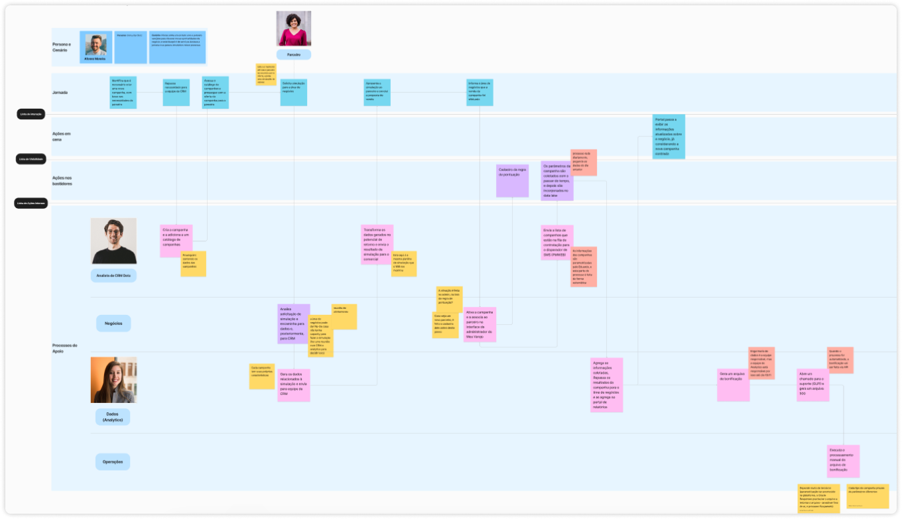
I studied how other players handled campaign creation (visually and at the flow level)
to map the most common path for building a campaign and decide where to follow convention versus
differentiate.
Working with stakeholders who knew these competitors well, that reference is what let us lock the flow direction for the platform.
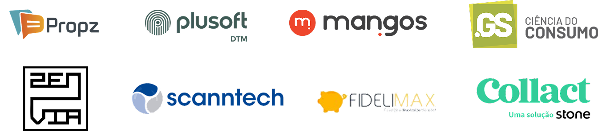
I tested low-fidelity prototypes with the same consultants I'd interviewed in discovery,deliberately validating the flow before committing engineering effort to a high-fidelity build.
Five users, qualitative, run to confirm direction early.
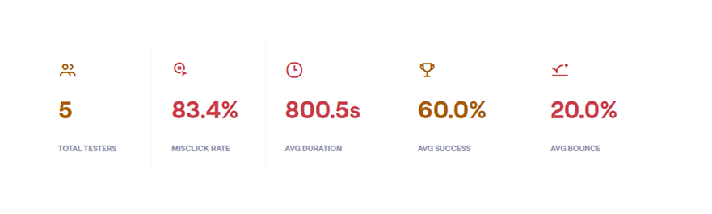
The test earned its place. Task success sat at 60%, with high misclick rates and long completion times concentrated on the campaign-setup screens, findability problems worth catching before build, not after.
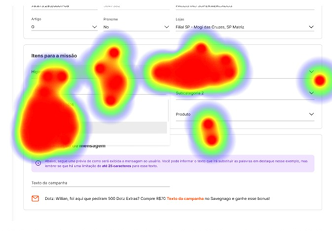
The open-ended responses were sharper than the metrics. Unprompted, consultants kept asking for the same things: a summary to review a campaign before sending it, a forecast of investment and expected return, and a log of past campaigns to validate parameters against.
Those requests became explicit priorities for the high-fidelity flow.
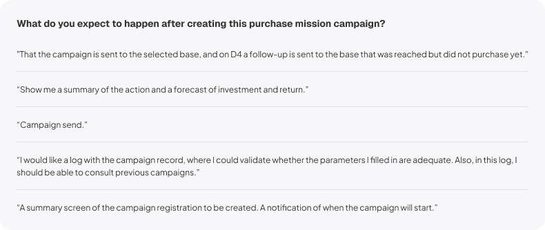
The high-fidelity flow answered the usability findings directly.
The screens consultants had asked for took shape here: a pre-send summary to review a campaign before activating it, a forecast of investment, margin, and expected return, and partner history pulled from past campaigns to validate parameters against.
That turned a manual, error-prone setup into a guided, self-validating flow.
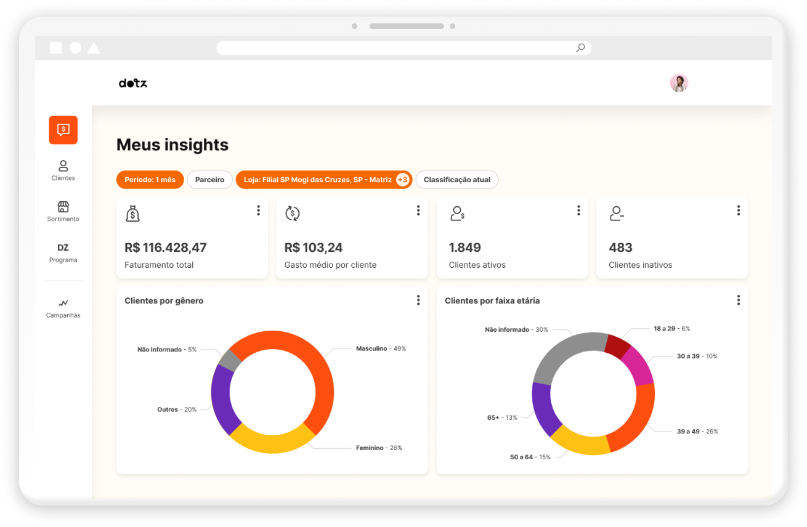
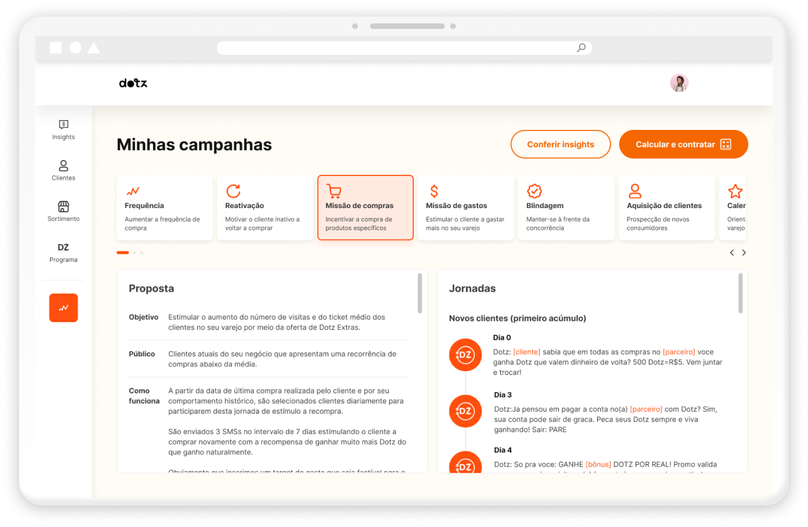
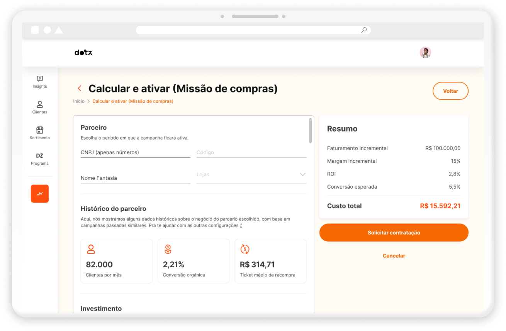
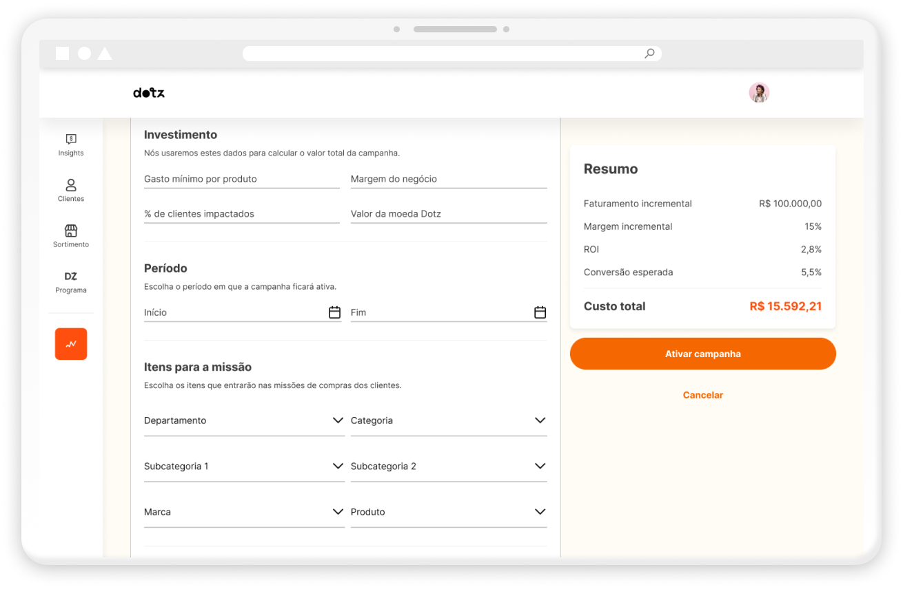
Centralizing partner data, automating campaign validation, and removing the manual configuration steps that used to span multiple teams is what made the following results possible.
Less time to create a campaign, with fewer handoffs between commercial, CRM, and data teams.
Revenue growth, supported by a higher volume of campaigns the platform made it faster to book.
Manual configurations left for the CRM team: the setup that once required them is now self-served in the flow.
In operational savings from streamlining the CRM and growth operations behind every campaign.
Beyond launch, discovery surfaced more opportunities than one release could hold.
I turned them into a prioritized, impact-versus-effort roadmap and ran the prioritization with the squad so the work was sequenced by value before the team committed to it, and the direction was set for the year ahead.
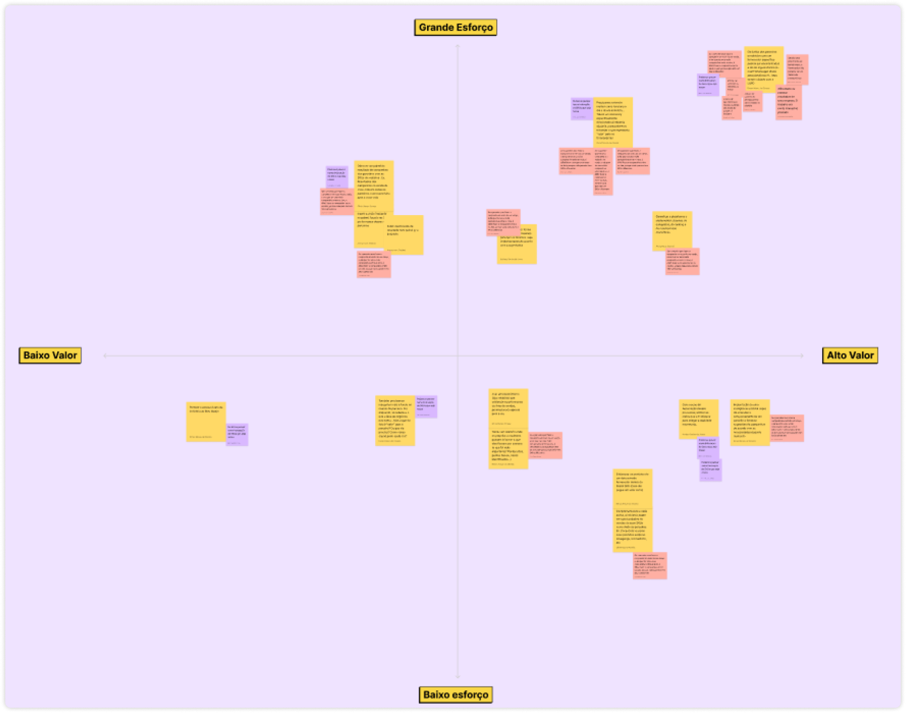